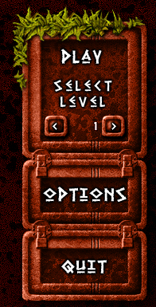
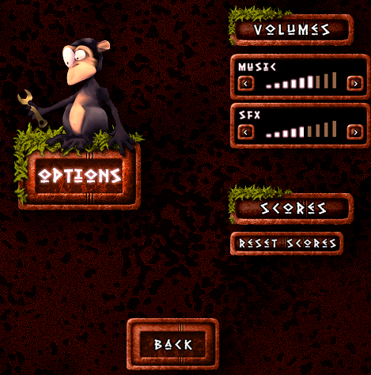

|  | Appuyez sur "PLAY" pour démarrer une nouvelle partie.
Les niveaux précedemment complétés peuvent etre rejoués, selectionnez le niveau désiré avec les 2 fléches. Par defaut le jeu vous remettra au dernier niveau joué. Le bouton "OPTIONS" vous amenera à l'écran d'options ou vous pourrez regler les volumes sonores et reinitialiser les scores. Le Bouton "QUIT" retourne au systeme d'exploitation. |
( Gauche diminue le volume, droite augmente le volume ) Cliquez sur "RESET SCORES" pour reinitialiser la table de scores. L'index des niveaux accessibles sera lui aussi réinitialisé. Le bouton "BACK" vous ramenera a la page d'introduction.

Vous pouvez ajuster le niveau sonore de la musique et des bruitages en cliquant sur la fleche de gauche et de droite de chaque indicateur.